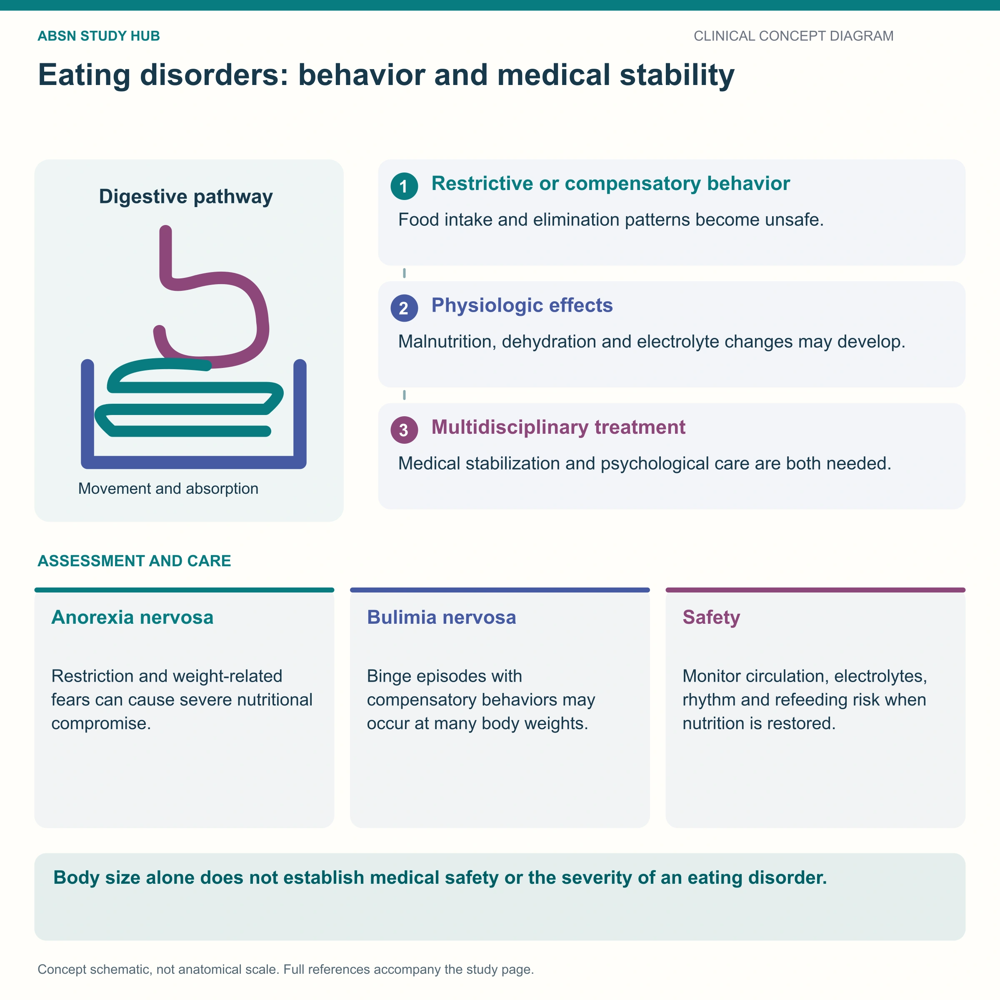

A serious, treatable illness — and a medical emergency when the body starts to fail
Anorexia nervosa is an eating disorder in which the client is preoccupied with weight and with what they eat, driven by a distorted body image and an unrealistic fear of being overweight. The behaviors lead to restriction and malnutrition. It carries the highest mortality rate of any mental health disorder — from medical complications and from suicide — so the nursing priorities are cardiac status, fluids & electrolytes, and a non-judgmental therapeutic relationship.
📄 Simple Nursing original — opens in Drive →
Two things define it: what the client believes about their body, and what the body does when it is starved.
ATI Anorexia nervosa: the client has an unrealistic fear of obesity. KAPLAN Clients see themselves as overweight even when they are not. This is a perceptual disturbance, not vanity and not a choice — arguing with the perception does not change it.

❌ Never describe the client as “just being dramatic” or “doing it for attention” — in the chart or out loud.
| 🪞 ANOREXIA | 🔄 BULIMIA |
|---|---|
| Restriction is the main behavior | Binge then compensatory behavior |
| Body weight is significantly low for the person | Weight is often normal or near-normal |
| Behavior feels consistent with the client's goal (ego-syntonic) — insight is often limited | Behavior often causes shame and is hidden |
| Danger: starvation physiology + refeeding | Danger: electrolyte loss from compensatory behavior |
👉 Full page: NG-106 — Bulimia Nervosa.
No single cause — biology, psychology and environment all contribute.
KAPLAN Which statements are true regarding anorexia nervosa? ✅ Clients see themselves as overweight. ✅ Adolescent females are the most affected group. ✅ Anorexia nervosa has the highest mortality rate of all mental disorders — from medical complications and from suicide.
Because suicide is a leading cause of death in this disorder, suicide risk assessment is part of routine care — not something you do only if the client seems sad.
❌ Never rule the diagnosis out because the client is male, older, or does not “look like” they have an eating disorder.
Frequently coexists with depression (NG-112), anxiety (NG-236) and obsessive-compulsive traits (NG-075).
Starvation → malnutrition. The body turns the thermostat down and every system slows.
Body fat is the body's insulation. When the fat layer under the skin thins, the body loses heat quickly, so it grows a coat of fine, soft, downy hair — lanugo — to trap warmth against the skin.
Answer first: starvation causes bradycardia and hypotension, and hypokalemia (potassium below 3.5 mEq/L) causes cardiac dysrhythmias. Put those together and you have the most dangerous combination on this page.
HESI An adolescent client with anorexia nervosa — which physical findings support the diagnosis? ✅ Lanugo · ✅ Irregular heart rate · ✅ A pulse rate in the 40s · ✅ A serum potassium well below the reference range.
Care is typically outpatient, but admission is indicated when the client is medically unstable:
Medical stability first, structure second, insight third — in that order.
HESI What is the focus for the acute phase of treatment? Restoring nutritional status and medical stability — the body has to be safe before therapy can do its work.
Encourage and reinforce “progress toward a healthy weight” and toward the client's own goals. Keep the tone matter-of-fact, warm and non-judgmental, and keep limits consistent between staff so the plan never becomes a negotiation.
👉 More on the technique itself: NG-271 — Therapeutic Communication.
The most dangerous moment is not the starving — it is the first days of feeding again.
Answer first: when nutrition resumes after prolonged malnutrition, insulin surges and drives phosphate, potassium and magnesium out of the bloodstream and into the cells, along with fluid. The serum levels fall fast — and that can cause cardiac failure, respiratory failure, dysrhythmias, seizures and delirium.
❌ Never advance nutrition faster than prescribed because the client “finally agreed to eat.” Enthusiasm is not a reason to skip the protocol.
These newly drawn concept diagrams consolidate the retired illustration sets. The accompanying study notes and original handout links remain on this page.